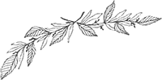
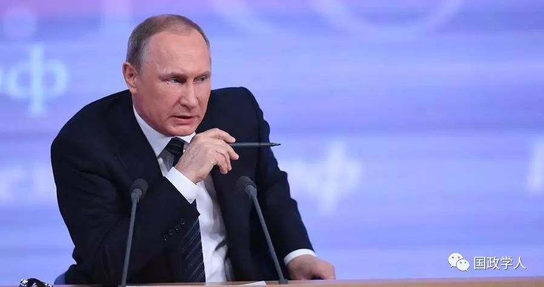
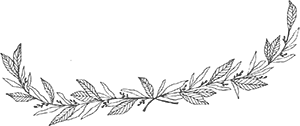

收录于合集

****
Putin’s Grand Chessboard

 U.S.-led sanctions against Moscow are helping to create a more assertive Russia determined to countervail American power. The bipartisan support in the U.S. Senate Foreign Relations Committee for additional sanctions, even as a special counsel investigates alleged collusion between President Donald Trump’s election campaign and Moscow, suggests that the U.S.-Russia relationship is likely to remain at a ragged low.
Despite the Russian economy suffering under the combined weight of sanctions and a fall in oil prices, Moscow is spreading its geopolitical influence to new regions and pursuing a major rearmament program involving both its nuclear and conventional forces. Today, Russia is the only power willing to directly challenge U.S. interests in the Middle East, Europe, Caspian Sea basin, Central Asia and now Afghanistan, where America is stuck in the longest war in its history.
Put simply, the U.S.-led Western sanctions since 2014 are acting as a spur to Russia’s geopolitical resurgence.
In keeping with the maxim that countries have no permanent friends or enemies, only permanent interests, Russia has rejiggered its geopolitical strategy to respond to the biting sanctions against it. Russian President Vladimir Putin has significantly expanded the geopolitical chessboard on which Moscow can play against the United States and NATO.
Historically, strongman governments facing domestic challenges have whipped up nationalism by rallying popular support against foreign adversaries. Who better to blame for Russia’s economic travails than the sanctions-imposing U.S. and its allies? Putin’s jaw-droopingly high approval ratings contrast starkly with the deepening unpopularity at home of his U.S. counterpart, Donald Trump.
Putin has shown himself to be a very skilled player of geopolitical chess. Despite Russia’s gross domestic product shrinking to below that of Italy, Putin has managed to build significant Russian clout in several regions.
Putin has made Russia the central player in the bloody Syrian conflict, fueled by outside powers. Until Russia launched its own air war in Syria in September 2015, the U.S.-British-French alliance had the upper hand there, aiding supposedly “moderate” jihadist rebels against President Bashar al-Assad’s government and staging separate bombing campaigns against the Islamic State terrorist organization. Russia’s direct intervention, without bogging down its military in the Syrian quagmire, has helped turn around Assad’s fortunes and reshaped Moscow’s relationships with Turkey, Israel and Iran.
As part of his multidimensional chess game, Putin is also building Russian leverage in other countries that are the key focus of U.S. attention — from North Korea to Libya. But it is Russia’s warming relationship with the medieval Taliban militia — the U.S. military’s main battlefield foe in Afghanistan — that has stood out.
Russia’s new coziness with the Taliban, of course, does not mean that the enemy of its enemy is necessarily a permanent friend. Putin is opportunistically seeking to use the Taliban as a tool to weigh down the U.S. military in Afghanistan. Because of the Taliban’s command-and-control base and guerrilla sanctuaries in Pakistan, Moscow has also sought to befriend that country.
The revival of the “Great Game” in Afghanistan is just one manifestation of the U.S.-Russian relationship turning more poisonous. Another sign is Moscow’s stepped-up courting of China. The U.S.-led sanctions have compelled Russia to pivot to China. Putin attended the recent “One Belt, One Road” summit in Beijing despite his concern that China is using that project to displace Russia as the dominant influence in Central Asia.
To be clear, Russia’s growing ties with India’s regional adversaries, China and Pakistan, have introduced strains in the traditionally close relations between Moscow and New Delhi. The paradox is that as India has moved strategically closer to the U.S., American policy has propelled Russia to forge closer ties with Beijing and to build new relationships with the Taliban and Pakistan.
The Russia-U.S. equation has a significant bearing on regional and international security. Trump came into office taking potshots at the Chinese leadership but wanting to be friends with Russia. However, the opposite has happened: America’s relationship with Russia, according to U.S. Secretary of State Rex Tillerson, has hit its lowest point in years while Trump has developed a strong personal relationship with China’s top autocrat, Xi Jinping, who welcomes the U.S. president’s mercantile, transactional approach to foreign policy.
This pirouette has happened because, in reality, Trump is battling those who, in the twenty-first century, are unwilling to forgo a Cold War mentality. Washington may be more divided and polarized than ever but, on one issue, there remains strong bipartisanship — Russia phobia. This has come handy to those seeking to inflict death by a thousand cuts on the Trump presidency, including by calculatedly leaking classified information and keeping the spotlight on the alleged Russia scandal in which there is still no shred of evidence of collusion between the Trump campaign and Moscow.
Against this backdrop, America’s sanctions against Russia are unlikely to go, despite clear evidence that they are fostering increasing Moscow-Beijing closeness by making Russia more dependent on China. The sanctions effectively undercut a central U.S. policy objective since the 1972 “opening” to Beijing by President Richard Nixon — to drive a wedge between China and Russia.
For Putin, the sanctions represent war by other means and a justification for him to make his next moves on the grand chessboard. With U.S. Senate Foreign Relations Committee Chairman Bob Corker determined to slap Moscow with additional sanctions, U.S.-Russian tensions and rivalries will continue to serve as a strategic boon for China even as they roil regional and international security.

来源：China & Focus
筛选：红尘
编辑：鑫辰
声 明
国政学人微信公众平台系非盈利学术平台。建立初衷是方便广大学人进行学术研究，促进学术的传播和交流，不做任何商业用途。如有任何权利问题，请直接与我们联系。
您可能还会喜欢：